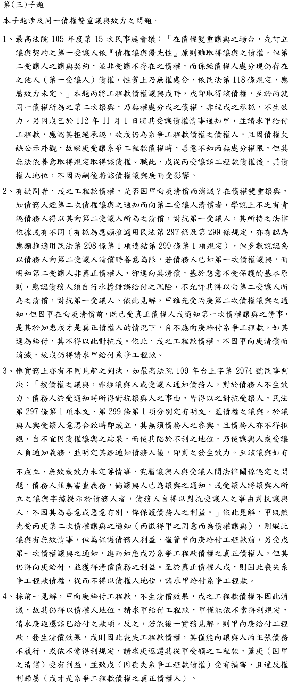
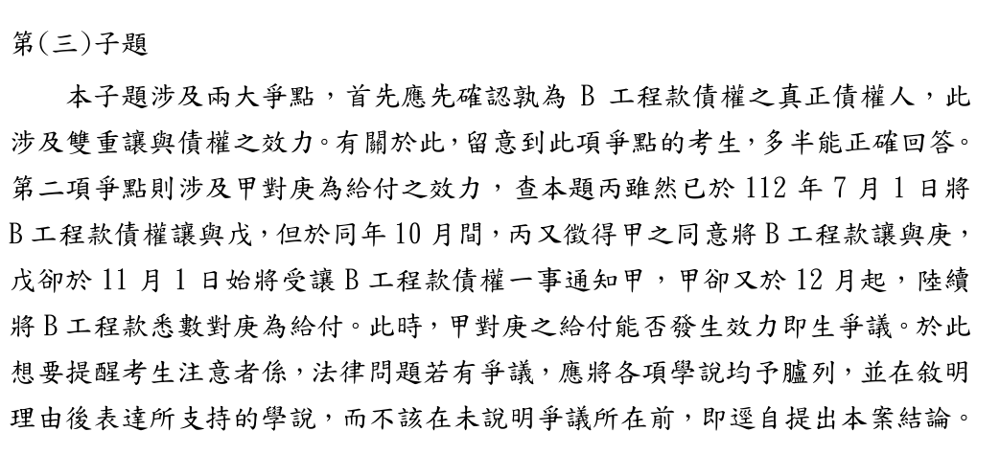

同一筆工程款讓了兩次，業主付給後來的人算數嗎？
113年律師第二試｜民法與民事訴訟法（一）｜第二題第（三）小題（30分）
題目
這一題有三個小題。本頁只做第（三）小題，用得到的事實畫黃色底線。
又，B工程施作期間中，丙於112年7月1日將其未來得向甲請求之B工程款（下稱B工程款）讓與戊公司以抵償債務。同年10月間，丙因財務周轉不靈，無力支付分包商庚公司承攬報酬，丙乃徵得甲之同意，將B工程款讓與庚。同年11月1日，戊將受讓B工程款債權一事通知甲，甲自同年12月起，陸續將原應給付丙之B工程款悉數向庚給付。試問：
- （一）若甲以A工程尾款扣抵逾期違約金後，乙以甲按日以契約總價千分之一計罰違約金，顯然過高，應予酌減為由，起訴請求甲返還經酌減部分之數額。甲則抗辯：系爭違約金債務業經以尾款扣抵而履行完畢，法院不得再為酌減。甲之抗辯有無理由？（15分）（本題講義）
- （二）若甲因A工程尾款不足扣抵逾期違約金，乃於110年11月1日實行權利質權，請求丁給付系爭存款，丁以其對乙之3000萬元借款債權，與系爭存款債權主張抵銷。甲抗辯：其係行使權利質權，丁不得主張抵銷，況丁受質權設定通知時，明知對乙有可抵銷之債權，卻未告知其將來可能行使抵銷權，亦違反誠信原則。甲之抗辯有無理由？（30分）（本題講義）
- （三）戊主張自己才是B工程款債權之真正債權人，而請求甲給付，有無理由？（30分）本頁只做這一題
影片說明
影片依序示範：主播介紹、整題讀一遍並逐句畫出事實、四個人與兌換券、學弟學姊把題目拆成兩個問題、第297條第1項、105年決議與第118條、時間軸、否定說與第310條第2款、109台上2974、兩說比較、戊怎麼辦、三個易錯點，最後把擬答從頭看一遍。
關係圖：四個人、一筆工程款
關鍵在時間順序：甲付款時，已經收到戊的通知，知道有第一次讓與。
| 人 | 身分 | 用兌換券比喻 |
|---|---|---|
| 甲 | 業主，欠B工程款的債務人 | 兌換券的店家 |
| 丙 | 承包商，原本的債權人；兩次讓與的讓與人 | 發券的人 |
| 戊 | 7月1日受讓，第一受讓人 | 拿到真券的人 |
| 庚 | 10月間受讓，第二受讓人 | 拿到「影子券」的人（丙手上已經沒有券了） |
答題順序：兩個問題
閱卷委員說，第①點多數考生能答對；第②點有爭議，要「各項學說均予臚列」，說明理由後再表態，不能沒說明爭議就直接下結論。
本題用到的條文
先看核心條文。原文中畫底線的部分，就是本題用到的那一句。
民法第297條第1項：通知是對債務人生效的要件（第①問）
債權之讓與，非經讓與人或受讓人通知債務人，對於債務人不生效力。但法律另有規定者，不在此限。
白話債權讓給別人，要通知欠錢的人，才能拿來對他主張。但沒通知，只是「對債務人」不生效；債權本身在讓與人和受讓人談好時就已經移轉了。
本題丙在112年7月1日讓給戊，戊當天就取得債權；戊到11月1日才通知甲，影響的是對甲的效力，不影響戊已經是債權人。
民法第118條第1項：無權處分（第①問）
無權利人就權利標的物所為之處分，經有權利人之承認始生效力。
白話把不是自己的東西拿去處分，要等真正的權利人點頭（承認），才會生效。
本題10月間丙再讓給庚時，債權已經是戊的，丙是「無權利人」，有權利人是戊。甲只是付錢的人，甲同意，不會讓債權變成庚的；要戊承認才行。戊11月1日通知甲並請求付款，應認拒絕承認，讓與庚確定不生效力。
補充如果戊承認，依第115條「經承認之法律行為，如無特別訂定，溯及為法律行為時發生效力」，丙讓與庚會回溯到10月間生效。這不是戊另外把債權讓給庚，而是讓丙那次讓與變有效。
民法第298條第1項：讓與人通知後的表見讓與（第②問）
讓與人已將債權之讓與通知債務人者，縱未為讓與或讓與無效，債務人仍得以其對抗受讓人之事由，對抗讓與人。
白話讓與人自己告訴債務人「我讓給某人了」，就算其實沒讓成或讓與無效，債務人照著通知付錢給那個人，讓與人也不能再找債務人要。
本題丙徵得甲同意讓與庚，等於丙已經讓甲知道「讓給庚了」。條文沒有寫「以債務人善意為限」，這是肯定說的依據之一。
民法第299條第1項：債務人的對抗事由（第②問）
債務人於受通知時，所得對抗讓與人之事由，皆得以之對抗受讓人。
白話債務人收到讓與通知時，原本可以拿來對付讓與人的理由，都可以拿來對付受讓人。
本題109台上2974把第297條第1項、第299條第1項合起來，認為債務人經通知後所為的給付，可以對抗；評分要點也提到有學說類推適用第297條、第299條，或第298條第1項連結第299條第1項。
民法第310條第2款：向債權準占有人清償（第②問，否定說的依據）
向第三人為清償，經其受領者，其效力依左列各款之規定：……二、受領人係債權之準占有人者，以債務人不知其非債權人者為限，有清償之效力。
白話把錢付給看起來像債權人、其實不是的人，只有在債務人「不知道」對方不是債權人時，才算清償。
本題否定說用這一款說明「要善意才保護」：甲付款前已經收到戊的通知，知道戊才是債權人，還付給庚，就不受保護。肯定說則認為，經讓與通知而生的保護，和第310條要分開看。
其他用到的條文（點開）
民法第179條：不當得利
無法律上之原因而受利益，致他人受損害者，應返還其利益。雖有法律上之原因，而其後已不存在者，亦同。
本題採否定說：甲付款無效，甲可以向庚要回來。採肯定說：戊的債權因甲清償而消滅，庚受領工程款卻不是債權人，戊可以向庚請求返還。
民法第319條、第320條：代物清償與新債清償（原因關係推演用）
第319條：債權人受領他種給付以代原定之給付者，其債之關係消滅。
第320條：因清償債務而對於債權人負擔新債務者，除當事人另有意思表示外，若新債務不履行時，其舊債務仍不消滅。
本題題目說丙把B工程款讓給戊「以抵償債務」，沒有交代是哪一種。見下方互動。
以上條文均依全國法規資料庫現行條文核對（2026-11-17）。
第①問：105年度第15次民事庭會議決議
最高法院105年度第15次民事庭會議決議（105年10月25日）
在債權雙重讓與之場合，先訂立讓與契約之第一受讓人依「債權讓與優先性」原則雖取得讓與之債權，但第二受讓人之讓與契約，並非受讓不存在之債權，而係經債權人處分現仍存在之他人（第一受讓人）債權，性質上乃無權處分，依民法第一百十八條規定，應屬效力未定。
決議全文列出有效、無效、通知生效、效力未定四種看法，決議採效力未定。決議制度已隨108年7月4日大法庭制度施行而廢除（司法院大法庭專區：「大法庭制度實施後，判例選編及決議制度也一併廢除」）；考選部評分要點仍以此決議作為第①問的依據。
第②問：甲付給庚，算不算清償？
| 比較 | 否定說（不生清償效力） | 肯定說（有清償效力） |
|---|---|---|
| 出處 | 評分要點稱「多數說」 | 109台上2974；評分要點也提到學說上「不乏有肯認」 |
| 看什麼 | 債務人向第二受讓人清償，以善意為限；惡意不受保護（第310條第2款同旨） | 讓與效力如何是讓與人與受讓人間的問題，債務人無審查義務，經通知即得對抗，不因善意或惡意有別 |
| 本題涵攝 | 甲付款前已受戊通知，知道戊才是債權人，仍付給庚，自負錯付風險 | 甲經丙徵得同意而知悉讓與庚，依此付款，可以對抗戊 |
| 戊的請求 | 有理由；甲只能依第179條向庚請求返還 | 無理由；戊只能向丙或庚主張（本文採） |
本文採肯定說的理由：第297條、第298條第1項都沒有要求債務人善意；經讓與通知而生的信賴保護，與第310條對準占有人的清償，應分別處理。債務人收到互相衝突的通知，如果必須自己判斷誰真誰假，就是在承擔讓與人製造的風險。
評分要點兩說並列；依任一說論述完整、前後一致，都可得分。閱卷委員要求先列各說、敘明理由，再表達支持哪一說。
答題地圖
標號層次：一、→（一）→1.。第一行直接寫結論。
考選部評分要點與閱卷委員的話
| 評分要點 | 內容 |
|---|---|
| 1. 誰是債權人 | 依105年度第15次民事庭會議決議，第二次讓與是無權處分、效力未定，非經戊承認不生效力；戊通知甲並請求給付，應認拒絕承認。債權欠缺公示外觀，庚縱善意也不能善意取得。戊仍為債權人。 |
| 2. 否定說（多數說） | 債務人向第二受讓人清償以善意為限；甲付款前已受戊通知，不得以向庚之清償對抗戊，戊仍得請求甲給付。 |
| 3. 肯定說（109台上2974） | 讓與效力屬讓與人與受讓人間的問題，債務人無審查義務，不因善意或惡意有別；甲向庚給付獲清償之利益，戊喪失債權。 |
| 4. 兩說的結果 | 前說：戊得請求甲給付，甲依不當得利向庚請求返還。後說：戊僅能向丙主張債務不履行，或依不當得利請求庚返還。 |

閱卷委員的話：
- 先確認誰是B工程款債權的真正債權人；留意到這個爭點的考生，多半能正確回答。
- 第二個爭點是甲對庚給付的效力，有爭議。
- 法律問題有爭議時，應將各項學說均予臚列，敘明理由後表達所支持的學說，不該在未說明爭議前就逕自提出結論。

來源：考選部〈113年司法官、律師考試第二試法律專業科目評分要點與閱卷委員的話〉民法與民事訴訟法（一）第8至11頁，已轉成圖片逐頁核對。
擬答
戊之請求無理由。
一、戊為系爭工程款債權之債權人
（一）債權讓與於讓與人與受讓人意思合致時即生移轉效力，通知僅為對債務人生效之要件（民法第297條第1項）。丙於112年7月1日將B工程款債權讓與戊，戊即取得該債權。
（二）丙其後就同一債權再讓與庚，係無權處分，效力未定（第118條第1項；最高法院105年度第15次民事庭會議決議）。甲之同意不能代替戊之承認；戊於同年11月1日通知甲並請求給付，應認拒絕承認。債權欠缺公示，庚縱善意亦無從善意取得。故戊為真正債權人。
二、甲向庚給付，是否消滅戊之債權
（一）否定說：債務人向第二受讓人清償，以善意為限；第310條第2款亦僅保護不知受領人非債權人之債務人。甲於清償前已受戊之通知，仍向庚給付，應自負錯付風險；戊仍得請求甲給付，甲僅得依第179條向庚請求返還。
（二）肯定說：債權讓與無須債務人參與，不宜使其陷於不利；讓與效力如何，屬讓與人與受讓人間之問題，債務人無審查義務，經通知即得以之對抗，不因善意或惡意有別（第297條第1項、第299條第1項；109台上2974）。前開決議僅處理讓與人與受讓人間之效力，與對債務人之效力係屬二事。
（三）本文採肯定說。第297條、第298條第1項均未以債務人善意為要件；經讓與通知而生之信賴保護，與第310條對準占有人之清償，應分別處理。債務人面對相互衝突之通知，若須自行判斷真偽，即承擔讓與人製造之風險。甲經丙徵得同意而知悉讓與庚之事，依此向庚給付，有清償效力，戊之債權因而消滅。
三、結論
戊請求甲給付無理由。戊僅得依其與丙間之原因關係，向丙主張債務不履行之損害賠償，或依第179條請求庚返還所受領之工程款。
擬答690字（含標題、標點與數字，不含空白，以程式計算）。
字數上限：為什麼是693字
| 項目 | 數字 |
|---|---|
| 本小題可用時間 | 120分鐘 × 30/150 ＝ 24分鐘 |
| 讀題 | 約3分鐘，實際作答約21分鐘 |
| 打字速度 | 一般人中文打字約每分鐘33字（粗估） |
| 上限 | 21分鐘 × 每分鐘約33字 ＝ 693字 |
互動：戊向丙主張「原因關係」，要看是哪一種抵償
題目只說丙把B工程款讓給戊「以抵償債務」，沒說是代物清償還是新債清償。兩種情形，戊向丙主張的內容不一樣。先自己想想，再點。
這兩個分頁是本頁依肯定說的結論（戊的工程款債權已因甲向庚清償而消滅）所做的推論，不是考選部評分要點的內容；評分要點只寫「向讓與人丙主張債務不履行」。本頁推論
實務見解
最高法院109年度台上字第2974號民事判決（110年6月23日，上訴駁回）
……至該讓與如有不成立、無效或效力未定等情事，究屬讓與人與受讓人間法律關係認定之問題，債務人並無審查義務，倘讓與人已為讓與之通知……，債務人自得以對抗受讓人之事由對抗讓與人，不因其為善意或惡意有別，俾保護債務人之利益。
……至本院105年度第15次民事庭會議決議，係就……該第二次債權轉讓（讓與）行為，於讓與人與受讓人間效力如何之問題所表示之見解，與該債權讓與對於債務人是否發生效力及其效力為何，係屬二事，不容混淆。
歷審：臺灣新北地方法院105年度建字第13號 → 臺灣高等法院106年度上字第314號 → 本件以上訴無理由駁回，屬實體駁回，第一受讓人敗訴確定。
決議在司法院法令判解系統、判決在司法院裁判書系統開全文並核對右側歷審（2026-11-17）；判決原文載有當事人名稱，本頁只用身分稱呼。
學說補充
尚未加入指定學說文獻。評分要點提到肯定說的法律依據「或有不同」（類推適用第297條及第299條，或類推適用第298條第1項連結第299條第1項），本頁不另增列未查證的學者立場。
預想易錯點
以下是依閱卷委員的話與判決查證整理的易錯方向，還不是學生實際作答的統計。
| 可能的錯誤 | 應該怎麼寫 |
|---|---|
| 只寫戊先受讓，就說甲要付給戊 | 漏了第②問：還要討論甲付給庚算不算清償。 |
| 沒列兩說就直接下結論 | 先列否定說、肯定說，各寫理由，再表態（閱卷委員點名）。 |
| 把105年決議當成在處理債務人付款的效力 | 決議只處理讓與人與受讓人之間；對債務人的效力是另一回事（109台上2974）。 |
| 說「甲同意了，所以讓與庚有效」 | 第118條第1項的承認要由有權利人戊來做，甲同意不能代替。 |
| 以為「誰先通知債務人，誰就取得債權」 | 債權在讓與合意時就移轉，通知只決定對債務人的效力（第297條第1項）。 |
| 選了肯定說，救濟卻寫「戊向甲請求」 | 救濟要跟著選說：肯定說下戊的債權已消滅，只能向丙或庚主張。 |
延伸思考
參考資料
歡迎指正
相關連結
民法講義總覽 同一題第（一）小題：違約金扣抵與酌減 同一題第（二）小題：權利質權與抵銷 第一題第（一）小題：詐害債權撤銷 第一題第（二）小題：附負擔贈與撤銷 第一題第（三）小題：袋地通行權與權利瑕疵 GitHub 原始檔